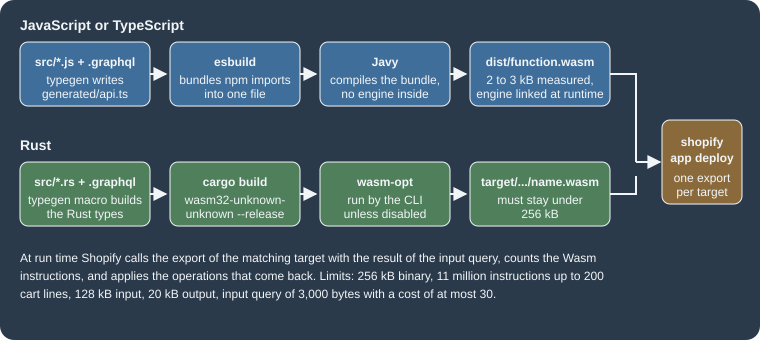
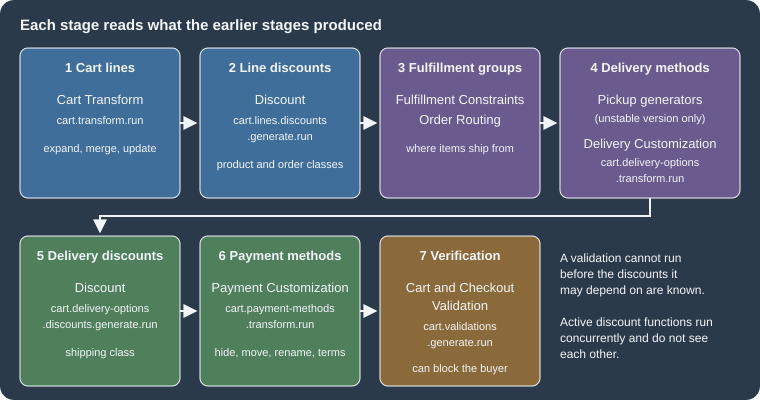
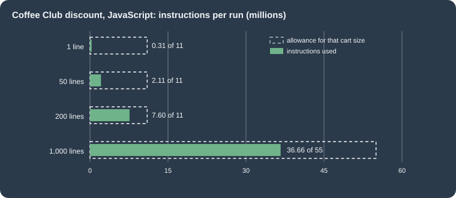

Shopify Functions
|
This content was generated with the assistance of AI and should be verified against the official documentation before being relied on in production. |
This page was written against the Shopify Function APIs in version 2026-10 (the latest stable version, released on
2026-10-01), Shopify CLI 5.0.0 (published on 2026-10-27, with the function-runner 9.2.2 that it bundles), the npm
package @shopify/shopify_function 2.0.1, the Rust crate shopify_function 2.3.0 (published on 2026-10-26) and the
extension templates of the Shopify/extensions-templates repository as of 2026-10-27, which still scaffold
api_version = "2026-07". It was checked on 2026-10-27. Shopify Functions are available on every plan when they ship
inside a public app from the Shopify App Store; a custom app that contains Functions can be installed only on a Shopify
Plus store, and a few operations are Plus-only even for public apps, as listed in the section on
Availability and plans.
A Shopify Function is a small piece of backend logic that Shopify runs for you inside the cart and checkout flows. You do not host it, you never call it by URL, and you cannot make network calls from it: you compile it to WebAssembly (Wasm), upload it with your app, and Shopify calls it at a named point (a target) with the result of a GraphQL query that you wrote (the input). The function answers with a list of operations (give this line 10 percent off, hide this payment method, expand this line into its components, reject this checkout) and Shopify applies them. Functions replaced the older Shopify Scripts, which stopped executing on 2026-06-30, so this page is also the migration target for every Script.
The page sits after the pages on apps and scaffolding, access scopes and the Admin GraphQL API, whose mutations activate a Function, and it complements checkout extensibility, which covers the UI side of the same checkout. The language chapters of this site cover the languages involved: Rust, Rust and WebAssembly and JavaScript.
The running example is the Pocket Coffee shop. Five Functions are built for it, all in one app with five extensions:
| Pocket Coffee rule | Function API | Extension handle |
|---|---|---|
Coffee Club members get 10 percent off beans, and free shipping from 40 EUR |
Discount (two targets) |
|
The Starter kit line is split into the hand grinder and the 250 g beans it contains |
Cart Transform |
|
The "Same-day Madrid" option is hidden outside Madrid, and "Standard" is renamed |
Delivery Customization |
|
"Cash on Delivery" is hidden outside Spain, and "Bank Transfer" is renamed |
Payment Customization |
|
A cart heavier than the 5 kg parcel limit cannot be checked out |
Cart and Checkout Validation |
|
This page was prepared without a Shopify account: nothing was deployed, activated or run by Shopify. What did run locally
is the whole build and test loop. The five extensions were compiled to Wasm with shopify app build, executed with
shopify app function run on sample carts (including carts of 1, 50, 200 and 1,000 lines to measure the instruction
count), covered by Wasm integration tests (nine tests, all passing), and the six Admin GraphQL documents that activate
them were validated against the downloaded 2026-10 schema. The Rust Function was not compiled, because no Rust toolchain
was installed. The list of what was and was not run is in What was run and what was not.
How a Function works
A Function has three parts, and Shopify calls the same sequence every time it needs the Function’s answer.
-
The input query is a GraphQL query against the schema of the Function API, written in a
.graphqlfile next to the code. Shopify runs it before calling your code and hands the JSON result to the module. You receive only the fields you asked for, which keeps the input small and cheap to read. -
The function logic is a Wasm module with one exported function per target. Shopify’s own templates and client libraries exist for Rust and JavaScript, but any language that compiles to Wasm and meets the Wasm API can be used.
-
The output is a JSON document of declarative operations, shaped by the same API schema. Your code never changes the cart: it describes the change and Shopify applies it, after validating the document.

The lifecycle involves four actors, and a Function never runs unless a merchant has created a function owner for it. The owner is the Shopify object that the Function belongs to: a discount for the Discount API, a cart transform, a delivery customization, a payment customization or a validation for the others. The merchant (or your app, through the Admin GraphQL API) creates it, configures it, and can turn it on and off.
Source: Shopify: About Shopify Functions
Four properties of the model explain most of the design rules in the rest of this page.
-
Functions are deterministic. Randomness and clocks are not allowed, so the same module and the same input always give the same output and the same instruction count. That is what makes local testing exact. The input offers the shop’s local time through
shop.localTimewhen a rule depends on the hour of the day. -
Functions are isolated. A Function cannot call a service, read a database or write a file. Everything it knows comes from the input query: Shopify data, the metafields and app-owned metaobjects that hold its configuration, and the cart attributes the storefront set. The only exception is the fetch target, which is limited to custom apps installed on Enterprise stores (and, for the Discount API, Plus stores) and which also needs a request to Shopify for network access.
-
Functions are fast or they fail. They run in the buyer’s path, with hard limits on size, memory and instructions (see Limits and performance). A Function that breaks a limit does not slow checkout, it errors, and what happens next depends on the API.
-
Functions are versioned with the API. Each extension declares an
api_version, and the schema file it ships is a copy of that version’s schema. Updating the version, regenerating the schema and regenerating the JavaScript types are three separate steps.
The Function APIs and their targets
Every Function API has one or more targets, named identifiers such as cart.transform.run. The shopify.extension.toml
of an extension maps each target to an input query and a Wasm export. Names follow the pattern
context.object.action.mode, where the mode is run (the logic) or fetch (the optional network step that runs first).
| Function API | Target | Operations returned | Function owner and activation | Limit per store |
|---|---|---|---|---|
Discount |
|
|
An automatic or code discount: |
25 active discount functions |
Cart Transform |
|
|
|
One cart transform function per app |
Delivery Customization |
|
|
|
25 active |
Payment Customization |
|
|
|
25 active |
Cart and Checkout Validation |
|
|
|
25 active |
Fulfillment Constraints |
|
|
A fulfillment constraint rule |
25 active |
Order Routing Location Rule |
|
|
A location rule (by request, Plus only) |
not stated |
Source: Shopify: Function APIs and the reference page of each API linked in the references. The target names and operation names were read from the schema files of the extension templates; the limits per store come from the API pages and from the changelog entry on 25 functions in a single batch (2025-05-21).
Three more APIs exist in the template catalogue but are not part of the stable 2026-10 set: the fulfillment option
generator (cart.fulfillment-options.generate.run), the local pickup option generator
(purchase.local-pickup-delivery-option-generator.run) and the pickup point option generator
(purchase.pickup-point-delivery-option-generator.run) are templates with api_version = "unstable", which means they are
available only in the unstable API version and may change. The Discounts Allocator API
(purchase.discounts-allocator.run) was a developer preview that ended on 2026-09-10 and was removed; an app that still
declares that target fails shopify app deploy for the whole app, with the error text
API not found for target: purchase.discounts-allocator.run, until the extension is removed. The Product Discount, Order Discount and Shipping
Discount APIs are deprecated since API version 2025-04 and must be replaced by the unified Discount API, as described in
Migrating from the old discount APIs.
Execution order in checkout
Functions do not run all at once. Each API runs at a fixed point of the cart and checkout flow and reads what the earlier points produced, which is why a validation cannot see a cart that has not been discounted yet and why a discount sees the lines after a cart transform changed them.

The stages of the figure, in order, are the cart lines (Cart Transform), the cart line discounts (Discount), the fulfillment groups (Fulfillment Constraints and Order Routing), the delivery methods (the pickup generators, then Delivery Customization), the delivery discounts (Discount again, for the shipping class), the payment methods (Payment Customization) and finally the verification (Cart and Checkout Validation). Two practical consequences follow. A delivery customization runs before the delivery discounts of stage 5, and a payment customization runs after every discount has been calculated. When the order of two Functions matters, check the stage rather than assuming that the one installed first runs first.
Where each Function API works
Each API page lists the Shopify surfaces on which it runs. The entries that decide whether a rule will apply are worth knowing before designing a Function. "Partly" means the API page states a restriction, summarised below the table.
| Surface | Discount | Cart Transform | Delivery Customization | Payment Customization | Validation |
|---|---|---|---|---|---|
Cart page of a theme |
Yes |
Yes |
No |
No |
Yes |
Checkout |
Yes |
Partly |
Yes |
Yes |
Yes |
Accelerated checkout (Shop Pay, Apple Pay, Google Pay) |
Yes |
Yes |
Yes |
Partly |
Yes |
Storefront API carts |
Yes |
Yes |
No |
No |
Yes |
Draft order created in checkout |
Partly |
Yes |
Yes |
Yes |
Yes |
Draft order created in the admin |
Partly |
Yes |
No |
No |
Yes |
Order edit in checkout |
Partly |
No |
No |
No |
No |
POS |
Yes |
Partly |
Partly |
No |
No |
Subscriptions (recurring orders) |
Partly |
No |
No |
No |
No |
Pre-order and Try Before You Buy |
No |
No |
No |
Yes |
No |
Create Order API |
No |
No |
No |
No |
No |
Source: Shopify: Discount Function API, Cart Transform, Delivery Customization, Payment Customization and Cart and Checkout Validation, compatibility lists read on 2026-10-27.
The restrictions behind "Partly" are the following. A Discount function is not supported with network access on draft
orders, is not re-run when an order is edited in checkout, and is not re-run when recurring orders are created (a shipping
discount on the original order becomes a 100 percent shipping discount on the recurring orders, whatever its value). Cart
Transform in checkout rejects lineExpand, linesMerge and lineUpdate when a selling plan is present, and on POS it
needs ProductVariant.requiresComponents to be true for full support. Delivery Customization works on POS only when
shipping to a store. Payment Customization on accelerated checkout is limited as described in the payment section.
For Pocket Coffee the table has one immediate effect: the Coffee Club discount works at a POS counter (a market stall is a
realistic extension of the shop), while the parcel-weight validation does not, so a weight check for POS orders would need
another mechanism. It also means that nothing in delivery-rules or payment-rules can influence the cart page, where
the buyer has not yet chosen a destination.
Availability and plans
| Situation | What applies |
|---|---|
A public app distributed through the Shopify App Store that contains Functions |
Installable on a store of any plan. Individual capabilities can still be Plus-only, as listed below. |
A custom app that contains Functions |
Installable only on a Shopify Plus store. See plans and Shopify Plus for how custom apps are distributed. |
Development stores |
Can use apps with Functions for testing, including the Cart Transform |
Cart Transform |
Only development stores and Plus stores. |
Payment Customization: |
Only on stores with the Plus plan. |
Payment Customization: |
Only for B2B purchases on stores with the Plus plan. |
Payment Customization: hiding specific placements |
Only on Shopify Plus stores; without |
Fetch target (network access) |
Custom apps installed on Enterprise stores, after Shopify approves a request; for Discount, on Plus and Enterprise stores. Not available on development stores or in a feature preview. |
Order Routing Location Rule |
Available by request, for merchants on Plus enrolled in the Partners program. |
Source: Shopify: About Shopify Functions, availability, Function APIs, API availability and the individual API pages
The extension: files and configuration
A Function lives in an extension folder of the app, scaffolded with the CLI. With a store connection the command is interactive; in a script the template and flavor are given as flags.
# one extension per Function; --template selects the API, --flavor the language
shopify app generate extension --template discount --flavor vanilla-js --name "Coffee Club discount"
shopify app generate extension --template cart_transform --flavor rust --name "Starter kit bundle"Source: Shopify CLI: app generate extension. This command needs a Shopify login, so it was not run here; the extensions below were written by hand from the template files, using the same layout.
The template ids that produce Functions in the catalogue (templates.json of Shopify/extensions-templates) are
discount, cart_transform, delivery_customization, payment_customization, cart_checkout_validation,
fulfillment_constraints, order_routing_location_rule, the deprecated order_discounts, product_discounts and
shipping_discounts, and the unstable fulfillment_option_generator, local_pickup_delivery_option_generator,
pickup_point_delivery_option_generator and discounts_allocator. The --flavor option accepts vanilla-js,
typescript, rust and wasm for Functions (the react flavors are for UI extensions). Some Functions have a
companion admin UI extension that gives the merchant a configuration screen; discount_details_function_settings,
validation_settings_ui and order_routing_location_rule_ui are the templates for them.
A JavaScript Function extension, as built for this page, has this layout.
extensions/coffee-club-discount/
shopify.extension.toml configuration: api_version, targets, build
package.json dependencies and the "codegen" key used by typegen
schema.graphql copy of the Function API schema for api_version
src/
index.js re-exports one function per target
cart_lines_discounts_generate_run.graphql input query of the first target
cart_lines_discounts_generate_run.js logic of the first target
cart_delivery_options_discounts_generate_run.graphql
cart_delivery_options_discounts_generate_run.js
generated/api.ts types written by "shopify app function typegen"
dist/function.wasm build output
tests/default.test.js integration test (Vitest)
tests/fixtures/*.json one fixture per scenarioSource: Shopify/extensions-templates, folder functions-discount-js
shopify.extension.toml
The configuration of the first extension, exactly as it was built.
api_version = "2026-07"
[[extensions]]
name = "Coffee Club discount"
handle = "coffee-club-discount"
type = "function"
description = "10 percent off beans for Coffee Club members, free shipping from 40 EUR"
[[extensions.targeting]]
target = "cart.lines.discounts.generate.run"
input_query = "src/cart_lines_discounts_generate_run.graphql"
input_variables = { namespace = "$app:coffee-club", key = "variables" }
export = "cart-lines-discounts-generate-run"
[[extensions.targeting]]
target = "cart.delivery-options.discounts.generate.run"
input_query = "src/cart_delivery_options_discounts_generate_run.graphql"
input_variables = { namespace = "$app:coffee-club", key = "variables" }
export = "cart-delivery-options-discounts-generate-run"
[extensions.build]
command = ""
path = "dist/function.wasm"Every key that the file accepts is listed below.
The export value is a kebab-case string in the JavaScript templates (cart-lines-discounts-generate-run) and the
exported JavaScript function has the camelCase spelling (cartLinesDiscountsGenerateRun); the CLI generates the Wasm
exports from the targets of the configuration. In Rust the export is the name of the function marked with
#[shopify_function], in snake case (cart_lines_discounts_generate_run), so the export values differ between the two
languages. For API versions up to 2023-07 the CLI still compiles JavaScript to a single _start export for backward
compatibility.
package.json and typegen
The codegen key of the extension package.json tells shopify app function typegen which schema and queries to read and
where to write the TypeScript types, which JavaScript projects use through JSDoc.
{
"name": "coffee-club-discount",
"version": "0.0.1",
"license": "UNLICENSED",
"type": "module",
"scripts": {
"typegen": "shopify app function typegen",
"build": "shopify app function build"
},
"codegen": {
"schema": "schema.graphql",
"documents": "src/*.graphql",
"generates": {
"./generated/api.ts": {
"plugins": [
"typescript",
"typescript-operations"
]
}
},
"config": {
"omitOperationSuffix": true
}
},
"dependencies": {
"@shopify/shopify_function": "^2.0.1"
},
"devDependencies": {
"@shopify/shopify-function-test-helpers": "^1.1.0",
"typescript": "^5.9.3",
"vitest": "^3.2.7"
}
}Source: Shopify/extensions-templates, folder functions-discount-js
shopify app function typegen generated generated/api.ts (3,488 lines for the Discount schema) from the schema and from
the queries in src/. It names every operation after the query: the query CartLinesInput produced the type
CartLinesInput, whose field discount.metafield.jsonValue is typed unknown, because the content of a JSON metafield
is not known to GraphQL. The generated file also declares enums such as DiscountClass and
ProductDiscountSelectionStrategy, which the examples below import. The build runs typegen itself, so running it by hand
is only needed to refresh editor types.
The app configuration around the extensions
The extensions sit in an app whose shopify.app.toml declares the scopes needed by the mutations that activate them.
client_id = "00000000000000000000000000000000"
name = "pocket-coffee-functions"
application_url = "https://example.invalid"
embedded = true
[access_scopes]
scopes = "read_products,write_discounts,write_cart_transforms,write_delivery_customizations,write_payment_customizations,write_validations"
[auth]
redirect_urls = ["https://example.invalid/api/auth"]
[webhooks]
api_version = "2026-10"
[[webhooks.subscriptions]]
uri = "/webhooks/app/uninstalled"
topics = ["app/uninstalled"]
[[webhooks.subscriptions]]
uri = "/webhooks/customers/data_request"
compliance_topics = ["customers/data_request"]
[[webhooks.subscriptions]]
uri = "/webhooks/customers/redact"
compliance_topics = ["customers/redact"]
[[webhooks.subscriptions]]
uri = "/webhooks/shop/redact"
compliance_topics = ["shop/redact"]The client id is a placeholder of 32 zeros and the URLs use the reserved .invalid top-level domain, so the file can be
built but not deployed. The scopes follow the access scopes reference: write_discounts for the discount mutations,
write_cart_transforms, write_delivery_customizations, write_payment_customizations and write_validations for the
four owners of the other APIs.
Writing the input query
The input query is where most of the cost of a Function is decided, so it deserves the same care as the logic.
What the input contains
Each API exposes an Input type. The parts that recur are cart (lines, merchandise, buyer identity, delivery groups,
cost, attributes), localization (country, language), shop (local time, metafields, app-owned metaobjects),
presentmentCurrencyRate (to convert amounts from the shop currency), fetchResult (the answer of the fetch target when
there is one), and the function owner under a name that depends on the API: discount, cartTransform,
deliveryCustomization, paymentCustomization or validation. Each owner exposes metafield(namespace:, key:), which is
how a merchant’s configuration reaches the code. Cart lines are a union: the merchandise is a ProductVariant or a
CustomProduct, so queries select __typename and use inline fragments, and JavaScript tests it before reading
variant fields.
The Discount API adds enteredDiscountCodes and triggeringDiscountCode; Payment Customization adds the list
paymentMethods (with id, name and placements); Cart and Checkout Validation adds buyerJourney.step, so that a rule
can be applied only at, for example, the completion of checkout.
Cost and size limits
Shopify computes the cost of an input query from its text, before running the Function, and rejects the query when the cost is above 30 or its text is longer than 3,000 bytes (comments are not counted).
| Field | Example | Cost |
|---|---|---|
|
0 |
|
Any field that returns a |
|
3 |
Any field of a |
|
0 |
The |
|
1 |
|
|
3 |
|
on a customer or a product |
3 |
|
on a product or a variant |
3 |
Any field of a |
|
0 |
Any other leaf |
|
1 |
Container fields (such as cart or lines) cost nothing and each selected field is counted once, however many lines the
cart has. Aliasing a costly field several times charges it each time, so ten aliases of hasAnyTag cost 30, the whole
budget. List arguments and variables are limited to 100 elements and metafield values larger than 10,000 bytes are not
returned. A query over budget fails validation with Query has complexity of <cost>, which exceeds max complexity of 30.
Because the check happens at deploy time, a small script is useful during development. This one applies the table with
graphql 16 to any query file and a schema; it reproduces the cost of 8 that Shopify documents for its own example.
// Computes the Functions input-query cost with the rules of the "Input query limits" table.
import {parse, buildSchema, visit, TypeInfo, visitWithTypeInfo, getNamedType, isLeafType} from 'graphql16';
import fs from 'fs';
const [,, schemaFile, ...queries] = process.argv;
const schema = buildSchema(fs.readFileSync(schemaFile, 'utf8'));
const THREE = new Set(['hasAnyTag', 'hasTags', 'inAnyCollection', 'inCollections']);
for (const q of queries) {
const doc = parse(fs.readFileSync(q, 'utf8'));
const ti = new TypeInfo(schema);
let cost = 0;
visit(doc, visitWithTypeInfo(ti, {
Field(node) {
const name = node.name.value;
const parent = ti.getParentType()?.name;
const type = getNamedType(ti.getType());
if (name === '__typename') return;
if (parent === 'Metafield' || parent === 'HasTagResponse' || parent === 'CollectionMembership') return;
if (type?.name === 'Metafield') cost += 3;
else if (THREE.has(name)) cost += 3;
else if (name === 'metaobject') cost += 1;
else if (isLeafType(type)) cost += 1;
},
}));
console.log(`${q}: cost ${cost} of 30`);
}Source: Shopify: Function APIs, input query limits. The script is original; it implements the cost table above and nothing else.
Run on the queries of this page, the script printed these costs, and it printed 8 for the documented example and 33 for a
query with eleven aliased hasAnyTag selections.
| Input query | Cost of 30 |
|---|---|
Documented example (lines, |
8 |
|
11 |
|
9 |
|
6 |
|
4 |
|
3 |
|
3 |
Eleven aliased |
33 |
The local tools do not enforce the limit: shopify app build accepted the query with a cost of 33, and app function
run does not read the query at all. The error comes from Shopify’s own validation, so the script above is the way to
see it before a release.
Configuration through metafields and variables
Hard-coding a percentage in the code means a new release for every promotion. The documented pattern is to keep the configuration in a metafield on the function owner and to read it in the input query.
-
Use a JSON metafield for any structure with more than one field, and read it with
jsonValue, so that the code does not parse a string. One JSON metafield costs 3 however many keys it has, while three separate metafields cost 9. -
Put the metafield in a reserved namespace with the
$app:prefix (for example$app:coffee-club), so that no other app can write to it. -
Let the merchant edit the values in an admin UI extension or an App Home page of your app, referenced from
[extensions.ui]or[extensions.ui.paths]. Metafields are written with the Admin API, for instance in themetafieldsargument of the create mutation shown later. -
Change a configuration format with the parallel change pattern: read the old and the new metafield, prefer the new, migrate the data, then remove the old code. An invalid metafield for input variables raises
InvalidVariableValueErrorwhen the Function runs (since 2025-01), so malformed data fails loudly.
Input query variables go one step further: values that are arguments of fields, such as the tag in
hasAnyTag(tags: [$memberTag]), cannot come from the jsonValue of a metafield read in the same query, because the argument must be known
before the query runs. A query declares variables with defaults, and the target’s input_variables points at the JSON
metafield that overrides them. Pocket Coffee uses this so that the tag names are configuration instead of constants:
query CartLinesInput($memberTag: String! = "coffee-club", $beansTag: String! = "beans") {
cart {
buyerIdentity {
customer {
isMember: hasAnyTag(tags: [$memberTag])
}
}
lines {
id
merchandise {
__typename
... on ProductVariant {
product {
isBeans: hasAnyTag(tags: [$beansTag])
}
}
}
}
}
discount {
discountClasses
metafield(namespace: "$app:coffee-club", key: "function-configuration") {
jsonValue
}
}
}The aliases isMember and isBeans keep the JavaScript readable, and each hasAnyTag costs 3, which is part of the
11 points counted above. hasAnyTag returns one boolean, which is cheaper to process than receiving all the tags and
searching them in the module. Other fields that do the filtering inside Shopify are hasTags, inAnyCollection and
inCollections.
Scopes and protected data
The input query reads Shopify data on behalf of the app, so the fields it selects are bound to access scopes. Customer details and addresses additionally need protected customer data approval. Both matter in production: the Dev Dashboard shows the input and output of a Function run only when the app has the scopes that the input query requires (since 2026-05-13 these logs are visible automatically instead of through merchant-shared logs), and lists the missing scopes when a run cannot be shown.
Discount Functions
The Discount Function API (introduced on 2025-05-21) is the single entry point for custom discounts. One function
processes one discount, either an automatic discount or a discount code, and may apply savings in three discount
classes at once: PRODUCT (specific cart lines), ORDER (the order subtotal) and SHIPPING (delivery). The classes a
discount may use are set by the merchant or the app when the discount is created, and the function receives them in
discount.discountClasses, so it can return nothing for a class that was not enabled.
Up to 25 discount functions can be active on a store. They all run concurrently and know nothing about each other; what
Shopify does with their results is decided by the combination rules (combinesWith) and the stacking rules stored on
the discount node, not by the code.
Targets and operations
| Target | Class | Operations (one of each at most per result) |
|---|---|---|
|
Product, order |
|
|
Shipping |
|
Source: Shopify: Discount Function API
The operation groups share a selection strategy that tells Shopify how to pick among the candidates.
| Operation | Strategies | Meaning |
|---|---|---|
|
|
Apply the first candidate whose conditions hold, the candidate worth most, or every candidate to its eligible lines. |
|
|
As above; an order candidate targets |
|
|
Every eligible delivery discount is applied. |
Source: Shopify: Discount Function API and the schema file of the discount template
A candidate carries a message (shown to the buyer), targets, a value and optional fields. The value is either a
percentage or a fixedAmount (a product candidate’s fixed amount has appliesToEachItem). Order candidates take
conditions (cartLineMinimumQuantity, cartLineMinimumSubtotal or orderMinimumSubtotal), and product candidates take
prerequisites, a list of cartLine ids with the required quantity, which is how a "buy X, get Y" discount is expressed
(added to the API in 2026-04). associatedDiscountCode ties a candidate to an entered code and is meant for functions
with network access.
Discount codes entered by the buyer
For a code discount, triggeringDiscountCode holds the code that started the Function, and enteredDiscountCodes lists
every code the buyer typed. A function with network access may validate external codes with
enteredDiscountCodesAccept, which must contain a subset of the entered codes. Since 2025-12-17, any Discount function
that is backed by an automatic discount can reject codes with enteredDiscountCodesReject, giving a custom message, to
stop double discounting on sale prices or to disqualify products; only codes whose rejectable flag is true can be
rejected. Shopify validates a result and raises an error when it breaks one of these rules: more than one operation of the
same kind, an accepted code that was not entered, a rejected code that was not entered or is not rejectable, or an
associatedDiscountCode that was not entered.
The Coffee Club discount, lines target
The Pocket Coffee rule is: a customer of the Coffee Club segment gets 10 percent off the beans. The merchant tags the
members coffee-club and tags the bean products beans; the percentage lives in a JSON metafield. The input query is the
one shown before; the logic returns early whenever there is nothing to do, because each instruction costs checkout time.
import { DiscountClass, ProductDiscountSelectionStrategy } from "../generated/api";
/**
* @typedef {import("../generated/api").CartLinesInput} CartLinesInput
* @typedef {import("../generated/api").CartLinesDiscountsGenerateRunResult} CartLinesDiscountsGenerateRunResult
*/
const NO_CHANGES = { operations: [] };
/**
* @param {CartLinesInput} input
* @returns {CartLinesDiscountsGenerateRunResult}
*/
export function cartLinesDiscountsGenerateRun(input) {
// The discount only produces a PRODUCT class result when the merchant enabled that class.
if (!input.discount.discountClasses.includes(DiscountClass.Product)) return NO_CHANGES;
// Not a Coffee Club member (or a guest): nothing to do, return before any other work.
if (!input.cart.buyerIdentity?.customer?.isMember) return NO_CHANGES;
const percentage = Number(input.discount.metafield?.jsonValue?.percentage ?? 10);
const targets = input.cart.lines
.filter(
(line) =>
line.merchandise.__typename === "ProductVariant" &&
line.merchandise.product.isBeans,
)
.map((line) => ({ cartLine: { id: line.id } }));
if (targets.length === 0) return NO_CHANGES;
return {
operations: [
{
productDiscountsAdd: {
selectionStrategy: ProductDiscountSelectionStrategy.First,
candidates: [
{
message: `COFFEE CLUB ${percentage}% OFF BEANS`,
targets,
value: { percentage: { value: percentage } },
},
],
},
},
],
};
}Source: Shopify: Build a discount function and the JavaScript discount template of Shopify/extensions-templates
Three details of this code are worth reading closely. The discountClasses test returns early when the merchant did not
enable the product class. The test on merchandise.__typename guards the union before the variant’s product is read.
And the message is what the buyer sees next to the discounted line, so it is written for the buyer, not for the log.
The Coffee Club discount, delivery target
The same extension implements the shipping side: members get free shipping when the subtotal reaches 40 EUR.
query CartDeliveryOptionsInput($memberTag: String! = "coffee-club") {
cart {
buyerIdentity {
customer {
isMember: hasAnyTag(tags: [$memberTag])
}
}
cost {
subtotalAmount {
amount
}
}
deliveryGroups {
id
}
}
discount {
discountClasses
metafield(namespace: "$app:coffee-club", key: "function-configuration") {
jsonValue
}
}
}import { DeliveryDiscountSelectionStrategy, DiscountClass } from "../generated/api";
/**
* @typedef {import("../generated/api").CartDeliveryOptionsInput} CartDeliveryOptionsInput
* @typedef {import("../generated/api").CartDeliveryOptionsDiscountsGenerateRunResult} CartDeliveryOptionsDiscountsGenerateRunResult
*/
const NO_CHANGES = { operations: [] };
/**
* @param {CartDeliveryOptionsInput} input
* @returns {CartDeliveryOptionsDiscountsGenerateRunResult}
*/
export function cartDeliveryOptionsDiscountsGenerateRun(input) {
if (!input.discount.discountClasses.includes(DiscountClass.Shipping)) return NO_CHANGES;
if (!input.cart.buyerIdentity?.customer?.isMember) return NO_CHANGES;
const threshold = Number(input.discount.metafield?.jsonValue?.freeShippingFrom ?? 40);
const subtotal = Number(input.cart.cost.subtotalAmount.amount);
if (subtotal < threshold) return NO_CHANGES;
return {
operations: [
{
deliveryDiscountsAdd: {
selectionStrategy: DeliveryDiscountSelectionStrategy.All,
candidates: input.cart.deliveryGroups.map((group) => ({
message: "COFFEE CLUB FREE SHIPPING",
targets: [{ deliveryGroup: { id: group.id } }],
value: { percentage: { value: 100 } },
})),
},
},
],
};
}The subtotal arrives as a decimal string ("45.00"), which the code converts with Number. Money is exposed as a
Decimal scalar so that no precision is lost in transit; converting to a number is acceptable for a threshold
comparison, and an amount that must be exact in the output is better returned as it was received. A checkout can hold
several delivery groups (shipping and pickup, for example), so the candidates are created for every group instead of
assuming one.
src/index.js re-exports both functions, which is how one module serves two targets.
export * from "./cart_lines_discounts_generate_run";
export * from "./cart_delivery_options_discounts_generate_run";Source: Shopify/extensions-templates, folder functions-discount-js
Running the discount locally
shopify app function run executes the compiled module with an input that you supply, with the same runner (function-runner
9.2.2) that the CLI bundles. The first input is a member whose cart holds one bean line and one equipment line.
{
"cart": {
"buyerIdentity": { "customer": { "isMember": true } },
"lines": [
{ "id": "gid://shopify/CartLine/1", "merchandise": { "__typename": "ProductVariant", "product": { "isBeans": true } } },
{ "id": "gid://shopify/CartLine/2", "merchandise": { "__typename": "ProductVariant", "product": { "isBeans": false } } }
]
},
"discount": {
"discountClasses": ["PRODUCT"],
"metafield": { "jsonValue": { "percentage": 10, "freeShippingFrom": 40 } }
}
}export SHOPIFY_CLI_NO_ANALYTICS=1 CI=1
shopify app build --no-input
shopify app function run --no-input --path extensions/coffee-club-discount \
--input "$PWD/extensions/coffee-club-discount/tests/lines-member.json" \
--export cart-lines-discounts-generate-runSource: Shopify CLI: app function run
The --input path must be absolute (relative paths are resolved from the extension folder), and --export is needed when
the module has more than one target. The command printed the input, the logs (empty) and this output, followed by the
measurements:
{
"operations": [
{
"productDiscountsAdd": {
"selectionStrategy": "FIRST",
"candidates": [
{
"message": "COFFEE CLUB 10% OFF BEANS",
"targets": [
{
"cartLine": {
"id": "gid://shopify/CartLine/1"
}
}
],
"value": {
"percentage": {
"value": 10
}
}
}
]
}
}
]
}Source: Shopify: Test and debug Shopify Functions. Output of the local run on 2026-10-27; only the bean line (id 1) is discounted.
| Run | Instructions | Linear memory | Module size |
|---|---|---|---|
Member, lines target (one bean line, one equipment line) |
328,602 |
1,280 kB |
3,345 bytes |
Guest, lines target (returns early) |
198,487 |
1,280 kB |
3,345 bytes |
Member with 45.00 EUR, delivery target |
293,914 |
1,280 kB |
3,345 bytes |
Source: Shopify CLI: app function run
The early return is visible in the numbers: the guest run executes about 130,000 fewer instructions than the member run. Even the guest run costs 198,000 instructions, which is the cost of starting the JavaScript engine and reading the input; that fixed cost is what a Rust Function does not pay, as discussed in the performance section.
Activating the discount
The function owner is created with an Admin API mutation. Since the 2025-10 API version the mutations identify the
function by the handle that you defined in shopify.extension.toml (functionHandle), which is stable across
environments, instead of the functionId, which changes at every deploy. The mutation also sets the discount classes,
the combination rules and the two metafields that the input queries read: the configuration of the Function and the
variables of the input queries.
mutation CreateCoffeeClubDiscount {
discountAutomaticAppCreate(
automaticAppDiscount: {
title: "Coffee Club"
functionHandle: "coffee-club-discount"
startsAt: "2026-11-01T00:00:00Z"
discountClasses: [PRODUCT, SHIPPING]
combinesWith: { productDiscounts: false, orderDiscounts: false, shippingDiscounts: true }
metafields: [
{
namespace: "$app:coffee-club"
key: "function-configuration"
type: "json"
value: "{\"percentage\":10,\"freeShippingFrom\":40}"
}
{
namespace: "$app:coffee-club"
key: "variables"
type: "json"
value: "{\"memberTag\":\"coffee-club\",\"beansTag\":\"beans\"}"
}
]
}
) {
automaticAppDiscount {
discountId
}
userErrors {
field
message
}
}
}Source: Shopify: discountAutomaticAppCreate. Validated against the Admin GraphQL 2026-10 schema; not executed, because it needs a store.
A merchant can create the same discount in the admin, in the Discounts page, by choosing the discount type that the app
provides; the [extensions.ui] or [extensions.ui.paths] configuration decides which screen the merchant sees, and
discountCodeAppCreate creates the code variant. The app can list its own Functions, with their ids, titles and API types, with the
shopifyFunctions query.
The same function in Rust
Rust is the language Shopify recommends for Functions that run on large carts or that are computationally complex. The
current template produces this code for the lines target (unmodified from the functions-discount-rs template; it
applies the 10 percent order discount and the 20 percent product discount of the template, not the Pocket Coffee rule).
use super::schema;
use shopify_function::prelude::*;
use shopify_function::Result;
#[shopify_function]
fn cart_lines_discounts_generate_run(
input: schema::cart_lines_discounts_generate_run::Input,
) -> Result<schema::CartLinesDiscountsGenerateRunResult> {
let has_order_discount_class = input
.discount()
.discount_classes()
.contains(&schema::DiscountClass::Order);
let has_product_discount_class = input
.discount()
.discount_classes()
.contains(&schema::DiscountClass::Product);
if !has_order_discount_class && !has_product_discount_class {
return Ok(schema::CartLinesDiscountsGenerateRunResult { operations: vec![] });
}
let mut operations = vec![];
// Check if the discount has the ORDER class
if has_order_discount_class {
operations.push(schema::CartOperation::OrderDiscountsAdd(
schema::OrderDiscountsAddOperation {
selection_strategy: schema::OrderDiscountSelectionStrategy::First,
candidates: vec![schema::OrderDiscountCandidate {
targets: vec![schema::OrderDiscountCandidateTarget::OrderSubtotal(
schema::OrderSubtotalTarget {
excluded_cart_line_ids: vec![],
},
)],
message: Some("10% OFF ORDER".to_string()),
value: schema::OrderDiscountCandidateValue::Percentage(schema::Percentage {
value: Decimal(10.0),
}),
conditions: None,
associated_discount_code: None,
}],
},
));
}
Ok(schema::CartLinesDiscountsGenerateRunResult { operations })
}Source: Shopify/extensions-templates, folder functions-discount-rs (the product class branch of the template is omitted here for brevity). This code was not compiled, because no Rust toolchain was installed for this page.
The code is typed against the schema through the schema module, whose types the #[typegen] macro in src/main.rs
generates from schema.graphql and the input query.
use shopify_function::prelude::*;
use std::process;
pub mod cart_delivery_options_discounts_generate_run;
pub mod cart_lines_discounts_generate_run;
#[typegen("schema.graphql")]
pub mod schema {
#[query("src/cart_lines_discounts_generate_run.graphql")]
pub mod cart_lines_discounts_generate_run {}
#[query("src/cart_delivery_options_discounts_generate_run.graphql")]
pub mod cart_delivery_options_discounts_generate_run {}
}
fn main() {
log!("Please invoke a named export.");
process::abort();
}Source: Shopify/extensions-templates, folder functions-discount-rs
The build configuration changes from the JavaScript one in the export values and in [extensions.build].
[[extensions.targeting]]
target = "cart.lines.discounts.generate.run"
input_query = "src/cart_lines_discounts_generate_run.graphql"
export = "cart_lines_discounts_generate_run"
[extensions.build]
command = "cargo build --target=wasm32-unknown-unknown --release"
path = "target/wasm32-unknown-unknown/release/coffee-club-discount.wasm"
watch = [ "src/**/*.rs" ]Source: Shopify: Rust for Functions
Migrating from the old discount APIs
The Product Discount, Order Discount and Shipping Discount APIs are deprecated since API version 2025-04 and Shopify
asked developers to move before API version 2026-04. Their targets (purchase.product-discount.run,
purchase.order-discount.run, purchase.shipping-discount.run) are replaced by the two targets above. The changes the
migration guide lists are these.
| Before | Now | Notes |
|---|---|---|
|
|
The discount that owns the function and its metafields. |
(not available) |
|
New input fields on both targets. |
|
|
A list of operations instead of a list of discounts. |
|
|
|
|
|
Delivery candidates target a delivery group or option. |
(not available) |
|
New in the unified API. |
Source: Shopify: Discount Function API, migrate from deprecated Discount Function APIs and Shopify changelog: deprecation of Product, Order and Shipping Discount Function APIs (2025-05-21). The old target names are those of the deprecated templates in the catalogue (order_discounts still uses purchase.order-discount.run).
Cart Transform Functions
The Cart Transform API changes the presentation and pricing of lines in the cart, which a discount cannot do: expand one line into its components, merge several lines into one bundle, or override a line’s title, image or price. Shopify runs it first, so everything after it (discounts, delivery, payment, validation) sees the transformed cart.
A store can install at most one cart transform function per app, and when several apps each have one, all of them run.
Two operations from different apps that touch the same line can collide, and Shopify resolves them in the order in which
the apps activated their transform with cartTransformCreate.
Operations
| Operation | What it does | Constraints |
|---|---|---|
|
Replaces one cart line by |
Component prices must be given for every component or for none. A price adjustment and per-component prices cannot be combined. Up to 150 expanded items. |
|
Merges |
The quantities must be available in the cart; the parent variant must exist. |
|
Changes one line’s |
Only development stores and Plus stores. The price cannot be negative. |
Collisions and rules
When operations target the same line, Shopify orders them by activation time and applies these rules.
-
Two
lineExpandoperations on one line: the first is executed, the others are discarded. The same holds for twolinesMergeand for twolineUpdateoperations. -
A
lineExpandand alinesMergeon one line: the expand wins and the merge is discarded. -
A
lineExpand, alinesMergeand alineUpdateon one line: the expand wins and the other two are discarded. -
A fixed
lineExpandand a customisedlineExpandon one line: the fixed one wins.
Shopify rejects lineExpand, linesMerge and lineUpdate for a cart that has a selling plan, which is a rejection, not an
error. Other invalid cases are a component quantity below zero, a line that does not exist, a variant id that does not
exist, a negative price, a merge quantity larger than the line’s quantity, and an update that targets a line that is being
expanded or merged.
Pricing a bundle
For a linesMerge the adjustment is applied to the sum of the component prices; for a lineExpand it is applied to the
price of the bundle product. When a lineExpand gives no fixed price per unit, Shopify allocates the bundle price to the
components by weight, where the weight of a component is its unit price multiplied by its quantity. For a bundle price
of 100 and components of 10 times 1, 20 times 2 and 30 times 3, the weights are 10, 40 and 90 (total 140) and the shares
are 7.14, 28.57 and 64.29, which is the worked example in the API reference. The amounts the input shows are in the
presentment currency, and output prices are interpreted in that currency too; to start from a shop-currency amount,
select presentmentCurrencyRate in the input and convert before returning the price.
Title and image overrides must use images uploaded to the Shopify CDN (an image URL from another host fails with
invalid_image_url) and without a size suffix; the override shows in the cart, checkout and order notification emails, but
a theme must print item.title (cart) or line.title (notification) to display the new title.
Errors
The API reference lists error codes per operation. Among them, exceeded_maximum_number_of_supported_expanded_cart_items
(more than 150), expanded_items_missing_prices (some components priced, some not),
cannot_combine_price_adjustment_and_price_per_component, component_merchandise_not_found,
insufficient_component_quantity_to_merge, parent_variant_not_found, invalid_image_url, image_not_found,
fixed_price_adjustment_cannot_be_negative and update_feature_not_available (the shop is not on Plus or a development
store) are the ones that appear while building. A runtime failure of a cart transform is exposed by the Storefront API,
since API version 2026-04, as the cart error code MERCHANDISE_LINE_TRANSFORMERS_RUN_ERROR instead of the generic
INVALID error with the message "An error occurred in your cart". blockOnFailure of cartTransformCreate decides
whether a failed run blocks cart and checkout operations.
The Starter kit expansion
The Pocket Coffee Starter kit is one variant (SKU PC-KIT-001) that contains the hand grinder and 250 g of beans. The
merchant sells it as one line, and the cart transform expands it into its two components, so that stock is decremented for
the real variants and the cart shows what the buyer gets. The components are configuration, stored in a JSON metafield on
the cart transform, not in the code.
query CartTransformRunInput {
cart {
lines {
id
quantity
merchandise {
__typename
... on ProductVariant {
sku
}
}
}
}
cartTransform {
metafield(namespace: "$app:kits", key: "components") {
jsonValue
}
}
}/**
* @typedef {import("../generated/api").CartTransformRunInput} CartTransformRunInput
* @typedef {import("../generated/api").CartTransformRunResult} CartTransformRunResult
*/
/** @type {CartTransformRunResult} */
const NO_CHANGES = { operations: [] };
/**
* @param {CartTransformRunInput} input
* @returns {CartTransformRunResult}
*/
export function cartTransformRun(input) {
// { "PC-KIT-001": [{ "merchandiseId": "gid://shopify/ProductVariant/...", "quantity": 1 }, ...] }
const kits = input.cartTransform.metafield?.jsonValue ?? {};
const operations = [];
for (const line of input.cart.lines) {
if (line.merchandise.__typename !== "ProductVariant") continue;
const components = kits[line.merchandise.sku ?? ""];
if (!components) continue;
operations.push({
lineExpand: {
cartLineId: line.id,
title: "Starter kit",
expandedCartItems: components.map((component) => ({
merchandiseId: component.merchandiseId,
quantity: component.quantity,
})),
},
});
}
return operations.length > 0 ? { operations } : NO_CHANGES;
}The expansion gives no component prices, so Shopify allocates the bundle’s price by weight as described above. The title
Starter kit keeps the bundle’s name on the expanded line. The input of the local run holds the kit and two bags of beans:
{
"cart": {
"lines": [
{ "id": "gid://shopify/CartLine/1", "quantity": 1, "merchandise": { "__typename": "ProductVariant", "sku": "PC-KIT-001" } },
{ "id": "gid://shopify/CartLine/2", "quantity": 2, "merchandise": { "__typename": "ProductVariant", "sku": "PC-ETH-WHL-250" } }
]
},
"cartTransform": {
"metafield": {
"jsonValue": {
"PC-KIT-001": [
{ "merchandiseId": "gid://shopify/ProductVariant/1001", "quantity": 1 },
{ "merchandiseId": "gid://shopify/ProductVariant/1002", "quantity": 1 }
]
}
}
}
}and the output is a single lineExpand for the kit line; the bags are left alone.
{
"operations": [
{
"lineExpand": {
"cartLineId": "gid://shopify/CartLine/1",
"title": "Starter kit",
"expandedCartItems": [
{
"merchandiseId": "gid://shopify/ProductVariant/1001",
"quantity": 1
},
{
"merchandiseId": "gid://shopify/ProductVariant/1002",
"quantity": 1
}
]
}
}
]
}Source: Shopify: Test and debug Shopify Functions. Output of the local run on 2026-10-27: 254,531 instructions, 1,995 bytes of Wasm.
Creating the owner, with the configuration metafield, needs one mutation; the two variant ids are placeholders.
mutation CreateKitTransform {
cartTransformCreate(
functionHandle: "kit-bundle"
blockOnFailure: false
metafields: [
{
namespace: "$app:kits"
key: "components"
type: "json"
value: "{\"PC-KIT-001\":[{\"merchandiseId\":\"gid://shopify/ProductVariant/1001\",\"quantity\":1},{\"merchandiseId\":\"gid://shopify/ProductVariant/1002\",\"quantity\":1}]}"
}
]
) {
cartTransform {
id
}
userErrors {
field
message
}
}
}Source: Shopify: cartTransformCreate. Validated against the Admin GraphQL 2026-10 schema; not executed.
Delivery Customization Functions
A delivery customization renames, reorders and hides the delivery options that a buyer sees at checkout (carrier rates, local delivery, pickup). Up to 25 can be active on a store. Typical uses are hiding an option for certain products or customers, ordering options by preference, hiding options for PO box addresses and adding messaging to titles. Hiding for PO box addresses works only for options that come from carrier services or third-party shipping apps; with Shopify’s built-in rates the address data may not be available to the function.
The target is cart.delivery-options.transform.run and the operations are deliveryOptionHide, deliveryOptionMove (with
the option’s deliveryOptionHandle and the new index) and deliveryOptionRename (with a new title). The input holds
cart.deliveryGroups, and each group holds its deliveryAddress, its deliveryOptions (with handle, title, code,
description, cost and deliveryMethodType), its cartLines and its groupType (one-time purchase or
subscription). A checkout and an order can contain several delivery methods,
for example shipping and pickup, so a function iterates over every delivery group and never assumes one method per
order.
Matching an option
An operation names an option by its handle. Matching on the title is tempting and is what the example below does for
readability, but it is brittle: a merchant can rename an option, a translation changes the title, and two options can share
a pattern. Since API version 2026-10 a delivery option also exposes its metafields (metafield(namespace:, key:)), which
lets a function that generates options, such as a carrier app, write a typed value that a delivery customization reads by
name instead of parsing the title. Metafields of a delivery option are not persisted after checkout.
The Pocket Coffee delivery rules
Pocket Coffee offers a same-day courier called "Same-day Madrid", only valid for postal codes that begin with 28, and a "Standard" option for everything else. The function hides the same-day option elsewhere and renames "Standard" to state the delivery time.
query CartDeliveryOptionsTransformRunInput {
cart {
deliveryGroups {
deliveryAddress {
countryCode
zip
}
deliveryOptions {
handle
title
}
}
}
}/**
* @typedef {import("../generated/api").CartDeliveryOptionsTransformRunInput} CartDeliveryOptionsTransformRunInput
* @typedef {import("../generated/api").CartDeliveryOptionsTransformRunResult} CartDeliveryOptionsTransformRunResult
*/
/** @type {CartDeliveryOptionsTransformRunResult} */
const NO_CHANGES = { operations: [] };
/**
* @param {CartDeliveryOptionsTransformRunInput} input
* @returns {CartDeliveryOptionsTransformRunResult}
*/
export function cartDeliveryOptionsTransformRun(input) {
const operations = [];
// A checkout can hold several delivery groups (shipping and pickup), so look at every one.
for (const group of input.cart.deliveryGroups) {
const address = group.deliveryAddress;
const inMadrid = address?.countryCode === "ES" && (address.zip ?? "").startsWith("28");
for (const option of group.deliveryOptions) {
if (option.title === "Same-day Madrid" && !inMadrid) {
operations.push({ deliveryOptionHide: { deliveryOptionHandle: option.handle } });
} else if (option.title === "Standard") {
operations.push({
deliveryOptionRename: {
deliveryOptionHandle: option.handle,
title: "Standard (2-3 working days)",
},
});
}
}
}
return operations.length > 0 ? { operations } : NO_CHANGES;
}Run with a Barcelona address (08001), the function renames the standard option and hides the Madrid one:
{
"operations": [
{
"deliveryOptionRename": {
"deliveryOptionHandle": "std-es",
"title": "Standard (2-3 working days)"
}
},
{
"deliveryOptionHide": {
"deliveryOptionHandle": "same-day-md"
}
}
]
}Source: Shopify: Test and debug Shopify Functions. Output of the local run on 2026-10-27: 199,405 instructions, 2,146 bytes of Wasm. The input is extensions/delivery-rules/tests/barcelona.json.
Activation uses deliveryCustomizationCreate:
mutation CreateDeliveryRules {
deliveryCustomizationCreate(
deliveryCustomization: { title: "Pocket Coffee delivery rules", functionHandle: "delivery-rules", enabled: true }
) {
deliveryCustomization {
id
}
userErrors {
field
message
}
}
}Source: Shopify: deliveryCustomizationCreate. Validated against the Admin GraphQL 2026-10 schema; not executed.
Payment Customization Functions
A payment customization renames, reorders and hides the payment methods of the checkout, sets payment terms and can add a
review requirement to an order. Up to 25 can be active on a store. The target is cart.payment-methods.transform.run; its
input lists paymentMethods (each with id, name and placements) next to the cart and localization.
| Operation | Behaviour |
|---|---|
|
Removes a method from the options. |
|
Moves a method to an |
|
Renames a method. |
|
Sets, changes or removes payment terms (net, fixed date or event-based, with an optional deposit). Plus only; not supported in accelerated checkouts; incompatible with carts that contain subscription selling plans. |
|
Submits the checkout as a draft that the merchant must review and approve, with a |
Five rules of the API decide what a function can touch.
-
Methods whose name is a logo, such as Shop Pay, Apple Pay and Google Pay, cannot be renamed. That includes all wallets and Shopify’s native gift card field.
-
Wallets can be removed from the express or payment section but cannot be reordered.
-
In Shop Pay, payment customization functions apply operations only to the native gift card field, not to other methods.
-
Plan and geographical restrictions apply to payment method customizations. When usage is restricted, the input still contains every payment method, but the operations that target restricted methods have no effect at checkout, so a function can seem to work in tests and not in a store.
-
Matching on
nameworks for the text a method shows in a given language; keep the comparison in one place and re-check it when the checkout languages change.
The Pocket Coffee payment rules
Pocket Coffee sells cash on delivery only in Spain (the courier handles the cash), and wants the bank transfer method to say that the parcel ships after the payment arrives.
query CartPaymentMethodsTransformRunInput {
localization {
country {
isoCode
}
}
paymentMethods {
id
name
}
}/**
* @typedef {import("../generated/api").CartPaymentMethodsTransformRunInput} CartPaymentMethodsTransformRunInput
* @typedef {import("../generated/api").CartPaymentMethodsTransformRunResult} CartPaymentMethodsTransformRunResult
*/
/** @type {CartPaymentMethodsTransformRunResult} */
const NO_CHANGES = { operations: [] };
/**
* @param {CartPaymentMethodsTransformRunInput} input
* @returns {CartPaymentMethodsTransformRunResult}
*/
export function cartPaymentMethodsTransformRun(input) {
const operations = [];
for (const method of input.paymentMethods) {
if (method.name === "Cash on Delivery" && input.localization.country.isoCode !== "ES") {
operations.push({ paymentMethodHide: { paymentMethodId: method.id } });
} else if (method.name === "Bank Transfer") {
operations.push({
paymentMethodRename: {
paymentMethodId: method.id,
name: "Bank Transfer (order ships after payment)",
},
});
}
}
return operations.length > 0 ? { operations } : NO_CHANGES;
}For a German buyer (DE) the local run hides the cash method and renames the bank transfer, and leaves the card alone:
{
"operations": [
{
"paymentMethodHide": {
"paymentMethodId": "gid://shopify/PaymentCustomizationPaymentMethod/1"
}
},
{
"paymentMethodRename": {
"paymentMethodId": "gid://shopify/PaymentCustomizationPaymentMethod/2",
"name": "Bank Transfer (order ships after payment)"
}
}
]
}Source: Shopify: Test and debug Shopify Functions. Output of the local run on 2026-10-27: 185,909 instructions, 1,907 bytes of Wasm. The input is extensions/payment-rules/tests/germany.json.
The owner is created with paymentCustomizationCreate.
mutation CreatePaymentRules {
paymentCustomizationCreate(
paymentCustomization: { title: "Pocket Coffee payment rules", functionHandle: "payment-rules", enabled: true }
) {
paymentCustomization {
id
}
userErrors {
field
message
}
}
}Source: Shopify: paymentCustomizationCreate. Validated against the Admin GraphQL 2026-10 schema; not executed.
Cart and Checkout Validation Functions
A validation function checks the cart and the checkout on the server, before the buyer can proceed, including express checkouts such as Shop Pay, PayPal, Google Pay and Apple Pay. It replaces what was previously done with scripts in the theme and with client-side checks that a buyer could bypass. Up to 25 can be active on a store. Typical uses are quantity limits for a flash sale, B2B minimums, maximums and multiples, order minimums or credit limits per company location, age or membership checks, purchase order number validation and billing address restrictions.
The target is cart.validations.generate.run, the only operation is validationAdd with a list of errors, and each error
has a message and a target, a path that tells the checkout where to show the message. An empty list means the cart is
valid. Errors from validation functions are exposed in the Storefront API Cart object (as user errors with the code
VALIDATION_CUSTOM), on the theme cart page and during checkout.
| Field | Target value |
|---|---|
The cart as a whole |
|
Email, phone |
|
Delivery address fields |
|
Billing address fields |
|
PO number |
|
Localized fields |
|
The billing address and PO number targets were added with API version 2026-04. The input has buyerJourney.step, so a rule
can run only at the completion of checkout, and the validation owner holds the metafields of the configuration. When
the function itself fails with a runtime error (not a validation error), blockOnFailure of validationCreate decides
whether the buyer is blocked: with blockOnFailure: true a failing function blocks checkout, and with false the failure is tolerated.
That setting is the difference between a safety net and an outage, and it should be chosen deliberately: a flash-sale
quantity limit should usually block, a soft recommendation should not.
The parcel weight limit
Pocket Coffee ships in parcels of at most 5 kg. The function sums the weight of the lines (each variant has a weight and a unit) and adds an error on the cart when the total is above the limit.
query CartValidationsGenerateRunInput {
cart {
lines {
quantity
merchandise {
__typename
... on ProductVariant {
weight
weightUnit
}
}
}
}
}/**
* @typedef {import("../generated/api").CartValidationsGenerateRunInput} CartValidationsGenerateRunInput
* @typedef {import("../generated/api").CartValidationsGenerateRunResult} CartValidationsGenerateRunResult
*/
const MAX_PARCEL_KG = 5;
const KG_PER_UNIT = { KILOGRAMS: 1, GRAMS: 0.001, POUNDS: 0.45359237, OUNCES: 0.0283495231 };
/**
* @param {CartValidationsGenerateRunInput} input
* @returns {CartValidationsGenerateRunResult}
*/
export function cartValidationsGenerateRun(input) {
let totalKg = 0;
for (const line of input.cart.lines) {
if (line.merchandise.__typename !== "ProductVariant") continue;
const perUnit = KG_PER_UNIT[line.merchandise.weightUnit] ?? 1;
totalKg += (line.merchandise.weight ?? 0) * perUnit * line.quantity;
}
const errors =
totalKg > MAX_PARCEL_KG
? [
{
message: `One parcel can hold ${MAX_PARCEL_KG} kg at most; split your order into two checkouts.`,
target: "$.cart",
},
]
: [];
return { operations: [{ validationAdd: { errors } }] };
}A cart with four 1 kg bags and five 250 g bags weighs 5.25 kg:
{
"operations": [
{
"validationAdd": {
"errors": [
{
"message": "One parcel can hold 5 kg at most; split your order into two checkouts.",
"target": "$.cart"
}
]
}
}
]
}Source: Shopify: Test and debug Shopify Functions. Output of the local run on 2026-10-27 for extensions/parcel-limit/tests/heavy.json: 193,127 instructions, 2,123 bytes of Wasm. A cart of two 1 kg bags (light.json) returned {"validationAdd": {"errors": []}}.
The first version of the fixture used three 250 g bags (4.75 kg), which is under the limit, and correctly produced no error; the test case was changed to five bags to cross the limit. A boundary of exactly 5 kg passes, because the check is a strict greater-than.
mutation CreateParcelLimit {
validationCreate(
validation: { title: "Parcel weight limit", functionHandle: "parcel-limit", enable: true, blockOnFailure: true }
) {
validation {
id
}
userErrors {
field
message
}
}
}Source: Shopify: validationCreate. Validated against the Admin GraphQL 2026-10 schema; not executed.
Other Function APIs
Three more stable APIs follow the same model and are only summarised here.
-
Fulfillment Constraints (
cart.fulfillment-constraints.generate.run) limits where cart items can be fulfilled from. Its operations aredeliverableLinesMustFulfillFromAdd(items must come from one of a list of locations) anddeliverableLinesMustFulfillFromSameLocationAdd(items must come from the same location). When the constraints cannot be met, the buyer sees no shipping options at checkout. Up to 25 can be active on a store. -
Order Routing Location Rule (
cart.fulfillment-groups.location-rankings.generate.run) ranks the locations that can fulfil each item withfulfillmentGroupLocationRankingAdd; Shopify picks the highest-ranked location. It applies to checkout, draft orders, order editing and order imports, and is available only by request to Plus merchants enrolled in the Partners program. -
Fetch targets add a network step before a run target for the APIs that support them (Discount, Cart and Checkout Validation and others). Shopify makes the HTTPS call on your behalf and passes the result to the run target as
fetchResult. It is limited to custom apps on Enterprise stores (Plus and Enterprise for Discount), needs network access approved by Shopify, and is not available on development stores. The page on plans and Shopify Plus places it among the Plus and Enterprise capabilities.
Choosing a language
Any language that compiles to a Wasm module meeting the Shopify Wasm API can be used, and the documentation names Rust, Zig and TinyGo as examples. Two languages have first-party templates and libraries: Rust and JavaScript (with TypeScript).
| JavaScript or TypeScript | Rust | |
|---|---|---|
Library |
npm |
crate |
Compiler |
esbuild bundles the sources and npm imports; Javy compiles the bundle |
|
Build |
Empty string |
The cargo command |
Binary size observed |
1.9 to 3.3 kB (the JavaScript engine is linked at run time and is not in the module) |
Under 256 kB is required; the template profile ( |
Instructions for the same job |
Hundreds of thousands for an almost empty run, millions for 50 to 200 lines (measured below) |
Lower; Shopify calls Rust "the most performant language choice" (not measured here) |
Local debugging |
|
|
Source: Shopify: Language considerations, JavaScript for Functions and Rust for Functions. The binary sizes and instruction counts were measured with the five JavaScript extensions of this page.
Shopify’s guidance is to use JavaScript for prototypes and for small carts, and Rust for public apps, for functions that expect many lines and for anything computationally heavy. The migration path is deliberately cheap: Rust code can be added next to the JavaScript in the same extension and the toml selects which one is built, so merchants never see the switch.
JavaScript and Javy
Shopify CLI compiles JavaScript with Javy, a build tool and a runtime engine. The module produced contains your code but not a JavaScript engine; it links to the engine at run time. That is why the five extensions of this page compile to modules between 1,907 and 3,345 bytes.
What the runtime provides and what it does not:
-
The language is ECMAScript 2020, plus
TextEncoderandTextDecoder(UTF-8 only; noTextEncoderStream, noencodeInto, no streaming decode). -
The event loop is disabled.
asyncandawaitand promises compile, but fail when the function executes. -
Web APIs such as
setTimeout,fetch,cryptoandURL, and Node.js globals such asprocessornode:http, are not available. -
npm packages are fine: esbuild bundles them before compilation. Every bundled dependency adds code that the engine must load, so keep the bundle small.
Both limits were reproduced. A function declared async produced the log Pending jobs in the event queue. Scheduling
events is not supported when the event-loop runtime config is not enabled, a Wasm backtrace and the output {}. A call
to fetch produced Error: fetch is not defined with a stack trace and the local runner’s Invalid Output error. Both
cases are covered by the pitfalls list at the end of this page.
TypeScript works through the same esbuild step; the generated api.ts declares the input and result types, and the
operation enums are imported from it as the templates do. The generated jsonValue type is unknown, so a TypeScript
function casts the configuration to its own type. The Decimal scalar is typed as a string in the generated types, while
the templates return numbers for percentages, which the schema accepts at run time.
Rust
The requirements are the latest stable Rust with the wasm32-unknown-unknown target installed (rustup target add
wasm32-unknown-unknown), Shopify CLI 3.85.0 or newer and version 2.0.0 or newer of the shopify_function crate. The
older wasm32-wasi and wasm32-wasip1 targets and the cargo-wasi tool are obsolete: Rust 1.84 removed wasm32-wasi,
and crate 2.0.0 and newer builds with the unknown-unknown target. Functions generated by the CLI use the latest crate.
The crate has five parts.
| Component | Description |
|---|---|
|
A macro that generates Rust types from the GraphQL schema and each input query: |
|
An attribute macro that marks the entry point: it exports a Wasm function with the Rust function’s name (which must match
the target’s |
|
A derive macro that deserialises the function input into your own structs, such as a JSON metafield configuration, with
|
|
Writes to the function’s logs; use it instead of |
|
A helper for unit tests that runs a function on a JSON input string. |
Source: Shopify: Rust for Functions
A typical Cargo.toml keeps the release profile that makes the module small.
[package]
name = "coffee-club-discount"
version = "1.0.0"
edition = "2021"
[dependencies]
shopify_function = "2.3.0"
[profile.release]
lto = true
opt-level = "z"
strip = trueSource: Shopify/extensions-templates, folder functions-discount-rs; the package name is changed to the extension handle. A rust-toolchain.toml with channel = "stable", the components rustfmt and clippy and the target wasm32-unknown-unknown is part of the template.
Configuration read from a JSON metafield is typed with custom_scalar_overrides, which links the jsonValue field to
your own struct, so that no JSON parsing appears in the code. The key is the path to the field, starting with the
query’s operation name.
use shopify_function::prelude::*;
#[derive(Deserialize)]
#[shopify_function(rename_all = "camelCase")]
pub struct Configuration {
pub discount_percentage: f64,
#[shopify_function(default)]
pub excluded_product_ids: Vec<String>,
}
#[typegen("schema.graphql")]
pub mod schema {
#[query(
"src/cart_lines_discounts_generate_run.graphql",
custom_scalar_overrides = {
"CartInput.discount.metafield.jsonValue" => super::cart_lines_discounts_generate_run::Configuration,
}
)]
pub mod cart_lines_discounts_generate_run {}
}Source: Shopify: Rust for Functions, migrating from JavaScript. The two code fragments of the reference are combined here. Not compiled.
To keep a Rust module under 256 kB, the documentation recommends keeping the template profile, leaving wasm_opt
enabled, using regex_lite instead of regex, using to_ascii_uppercase and to_ascii_lowercase to avoid Unicode
tables, querying only the data that is needed (typegen produces code for every field of every query) and keeping JSON
metafields small (deserialisation code grows with the struct). cargo doc --open and cargo expand show the generated
types.
To move an existing JavaScript function to Rust, add the Rust files to the same extension: update the JavaScript to
@shopify/shopify_function 2.0.0 or newer (the CLI picks its local runner from this version), add wasm32-unknown-unknown,
generate a temporary Rust extension to copy Cargo.toml and the .rs files, delete the temporary folder, add target/
to .gitignore, add __typename to fragments on interfaces and unions in the input queries (this does not affect the
JavaScript), port the logic, then switch the export values and the [extensions.build] section of the toml, keeping the
JavaScript values as comments. Integration tests can run both builds by passing targeting[fixture.target].export to the
runner, and the swap is reversible until the JavaScript source is removed.
The Wasm API for other languages
The Shopify Wasm API is a small set of imported functions that a module uses to read input and write output lazily, so
that no JSON parser needs to be embedded in the binary. Values are 64-bit NaN-boxed numbers whose tag says whether they
are a null, a boolean, a number, a string, an object, an array or an error. A module must export, for each target, a
function of type (func) with no parameters and no results, and it logs through the imported
shopify_function_log_new_utf8_str; writes to standard error are ignored. Read errors (decode error, not an object, byte
array out of bounds, read error, not an array, index out of bounds, not indexable) and write status codes (success, I/O
error, expected key, object length error, value already written, not an object, value not finished, array length error,
not an array) are numeric and may grow, so new codes must be handled. Moving from version 1 to version 2 of the Wasm API
means importing from shopify_function_v2, no longer passing a context pointer, and removing the context creation and
output finalisation calls.
(module
(func $run (export "run")
...
)
)Source: Shopify: WebAssembly for Functions. The WAT module is the reference’s skeleton of an export that matches the toml export = "run".
The Rust chapter WebAssembly with Rust explains the compiler targets and the Wasm model that Functions build on; Functions themselves use the first-party crate and not wasm-bindgen.
Building, testing and debugging
The command line
| Command | Purpose |
|---|---|
|
Validates |
|
Compiles one Function to Wasm. |
|
Regenerates the TypeScript types (JavaScript flavors only); prints |
|
Runs the compiled module once on an input and prints input, logs, output, resource limits and a benchmark. |
|
Re-runs a logged execution of a function (from |
|
Prints the handle, name, API version, targets (input query path and export), the paths of the schema, the Wasm file and the function runner. |
|
Fetches the latest schema of the Function API into |
|
Previews the app on a development store and streams function logs to the terminal; each run is saved under |
|
Builds, uploads and releases a new app version, including the Wasm modules. Needs a login (or a token in CI). |
Source: Shopify CLI: app function run, app function replay and Shopify: Test and debug Shopify Functions. The first five rows and info were run; schema was run only to see its login message; dev, deploy and replay need a Shopify identity or a log file and were not run.
shopify app function info --json returned, for the discount extension:
{
"function": {
"handle": "coffee-club-discount",
"name": "Coffee Club discount",
"apiVersion": "2026-07",
"directory": "/path/to/pocket-coffee-functions/extensions/coffee-club-discount",
"targets": [
{
"target": "cart.lines.discounts.generate.run",
"inputQueryPath": "/path/to/.../src/cart_lines_discounts_generate_run.graphql",
"export": "cart-lines-discounts-generate-run"
},
{
"target": "cart.delivery-options.discounts.generate.run",
"inputQueryPath": "/path/to/.../src/cart_delivery_options_discounts_generate_run.graphql",
"export": "cart-delivery-options-discounts-generate-run"
}
],
"schemaPath": "/path/to/.../schema.graphql",
"wasmPath": "/path/to/.../dist/function.wasm",
"functionRunnerPath": "/path/to/node_modules/@shopify/cli/bin/function-runner-9.2.2"
}
}Source: Shopify CLI: app function info. Output shortened; the absolute paths are replaced by placeholders.
Shopify CLI 5.0.0 removed shopify app logs and shopify app logs sources. Running the command now stops with this
message:
`shopify app logs` and `shopify app logs sources` were removed in Shopify CLI 5.0. To see Function logs, run `shopify app dev`.Source: Shopify CLI: app commands. Message printed by Shopify CLI 5.0.0 on 2026-10-27.
The current Shopify guide on testing and debugging still describes the command with its --source option, so for CLI
5.0.0 and newer app dev and the Dev Dashboard are the sources of function logs.
Logging
console.log in JavaScript, log! in Rust and the imported shopify_function_log_new_utf8_str in other languages
write to the function log, which is truncated after 1 kB and is shown by app function run under "Logs". Printing to
standard output or standard error does not work as a debugging tool. Logging costs instructions even when the text is
truncated, so temporary logs must be removed before deploy, and logs must never contain customer data. Because runs are
deterministic, a detailed log can be added to a local build and a production run reproduced exactly with its input.
Integration tests on the Wasm binary
Every Function template ships tests/default.test.js and tests/fixtures/, powered by the package
@shopify/shopify-function-test-helpers (1.1.0 at the check date, which also returns the instruction count of each
run). The test builds the module, reads the function information from the CLI, validates the input query against the
schema, validates each fixture’s input and expected output against the schema and the query, runs the compiled Wasm and
compares the result with the fixture. A fixture is a JSON file with a payload that has export, target, input and
output, and every .json file in the folder becomes a test.
{
"payload": {
"export": "cart-lines-discounts-generate-run",
"target": "cart.lines.discounts.generate.run",
"input": {
"cart": {
"buyerIdentity": {
"customer": {
"isMember": false
}
},
"lines": [
{
"id": "gid://shopify/CartLine/1",
"merchandise": {
"__typename": "ProductVariant",
"product": {
"isBeans": true
}
}
}
]
},
"discount": {
"discountClasses": [
"PRODUCT"
],
"metafield": null
}
},
"output": {
"operations": []
}
}
}The suites of the five extensions (nine tests: four for the discount, one each for the bundle, the delivery rules and the payment rules, two for the parcel limit) all passed with Vitest 3.2.7:
cd extensions/coffee-club-discount
npm install --save-dev vitest@^3.2.4 @shopify/shopify-function-test-helpers@^1.0.0
npx vitest runThe unmodified template test fails against Shopify CLI 5.0.0. The helper expects shopify app function info --json to
return schemaPath, wasmPath, functionRunnerPath and an object targeting at the top level, but CLI 5.0.0 (which
introduced typed JSON output for every command) returns the same information inside a function key and lists the targets as
an array called targets. The first failure was Failed to build schema from undefined, and after unwrapping the key the
next one was Cannot read properties of undefined (reading 'cart.lines.discounts.generate.run'). Until the helper or the
templates are updated, the beforeAll of the test can adapt the shape.
beforeAll(async () => {
functionDir = path.dirname(__dirname);
await buildFunction(functionDir);
functionInfo = await getFunctionInfo(functionDir);
// Shopify CLI 5.0.0 wraps the result in a "function" key and lists "targets" as an array.
const info = functionInfo.function ?? functionInfo;
({ schemaPath, functionRunnerPath, wasmPath } = info);
targeting = info.targeting ?? Object.fromEntries(info.targets.map((t) => [t.target, t]));
schema = await loadSchema(schemaPath);
}, 45000);Source: Shopify/shopify-function-test-helpers and the default.test.js of the functions-discount-js template. The adaptation is original and was run against Shopify CLI 5.0.0.
A pure unit test (Vitest for JavaScript, run_function_with_input and cargo test for Rust) is faster, can be
step-debugged, and does not need the compiled module, but it does not execute in Wasm, so a rare difference between the
test and production is possible. The Wasm integration test and app function run are the two checks that run the real
binary.
Limits and performance
| Fixed limit (every Function) | Value |
|---|---|
Compiled binary |
256 kB |
Runtime linear memory |
10,000 kB |
Runtime stack |
512 kB |
Runtime table elements, across all tables |
10,000 |
Runtime tables |
4 |
Logs written |
1 kB, truncated |
| Dynamic limit | Up to 200 cart lines | Above 200 lines |
|---|---|---|
Instructions |
11 million |
Scales proportionally |
Function input |
128 kB |
Scales proportionally |
Function output |
20 kB |
Scales proportionally |
Source: Shopify: Function APIs, limitations. One kilobyte is 1,000 bytes. The 20 kB output limit does not support bulk price transformations across all lines; use discount functions, B2B catalogs or target specific products instead.
Beyond the table, apps can reference only their own Functions in Admin mutations (another app’s function gives Function not
found), a function that declares a table larger than the limits cannot be deployed, and the App Store does not permit
apps that edit and execute function code dynamically. The input query limits (3,000 bytes, cost 30, lists of at most 100
elements, metafield values up to 10,000 bytes) are described in the section on the input query.
Measured scaling
The first extension was run on carts of 1, 50, 200 and 1,000 bean lines, all discounted by a member. The table shows the
instructions of the JavaScript module and the limits that app function run printed for each input.
| Lines | Instructions | Instruction limit | Input size | Output size | Linear memory |
|---|---|---|---|---|---|
1 |
308,514 |
11M |
222 B |
180 B |
1,280 kB |
50 |
2,107,267 |
11M |
4.37 kB |
2.08 kB |
1,344 kB |
200 |
7,597,751 |
11M |
17.21 kB |
8.04 kB |
1,472 kB |
1,000 |
36,664,857 |
55M |
85.96 kB |
40.07 kB |
2,112 kB |
Source: Shopify: Optimize instruction counts. Measured on 2026-10-27 with shopify app function run; the input size limit printed was 125 kB for up to 200 lines and 625 kB for 1,000 lines, the output limit 19.53 kB and 97.66 kB.

A 200-line cart of beans, with the function doing one boolean check per line, used 69 percent of the 11 million allowed instructions, which is why Shopify warns that JavaScript functions meet the limit sooner. The cost is roughly linear: about 36,000 instructions per line in this function, on top of a fixed cost of about 270,000 instructions. A real function with a richer rule per line, or with a nested loop, would exceed the limit well before 200 lines. The chart also shows the shape of the limit: it grows at the same rate as the cart above 200 lines, so a function that is linear in the number of lines stays inside the allowance, and a quadratic one does not.
What happens when a limit is broken
The local runner reports; it does not enforce. A test function with a busy loop reported 2,295,222,693 instructions
against an allowance of 11 million and printed the output without any error, so a local run must be compared with the
printed limit by hand (or by --json, whose instructions field is meant for scripts). In production, Shopify stops a
function that exceeds the instruction limit and reports an InstructionCountLimitExceededError. Other failures observed locally:
| Cause | Local result |
|---|---|
An |
Log: |
A call to |
|
An input query over the cost limit |
Built and ran locally without complaint; the limit is checked by Shopify’s own validation. |
Output that breaks an API rule (two operations of the same kind, unknown operation) |
Rejected by Shopify when the result is validated; a Wasm integration test with the schema catches shape errors earlier. |
Source: Shopify: JavaScript for Functions and Optimize instruction counts. The first two rows were produced on 2026-10-27 with modified copies of the discount extension that were deleted afterwards.
What a failed Function means for the buyer depends on the API: a Cart Transform run failure surfaces as the Storefront
error code MERCHANDISE_LINE_TRANSFORMERS_RUN_ERROR and blocks the operation when blockOnFailure is set, and a
Validation function with blockOnFailure set stops checkout. These are decisions to take at activation time.
Reducing instructions
Shopify lists the improvements in order of effect: migrate to Rust, request only the input the function needs, profile the
function and optimise the hot paths, and track instruction counts in the tests so that they do not regress. For input,
query only what is read, let Shopify evaluate conditions through hasAnyTag, inAnyCollection and similar fields, read
JSON metafields with jsonValue, and precompute configuration when the merchant saves it so that the function receives
the shape it needs (a lookup of ids rather than rules to evaluate). For logic, return early, avoid nested loops over
lines (build a map or a set in one pass), avoid repeated work, avoid string work such as formatting and case conversion,
and remove debug logging. For Rust, use the latest crate, borrow instead of cloning, avoid allocating strings inside
loops, and try opt-level values other than "z" while watching the 256 kB limit.
To profile, build a Rust module with strip = false in [profile.release] and wasm_opt = false in
[extensions.build], then run shopify app function run --input input.json --profile and open the .perf file in
Speedscope. A JavaScript function shows every frame as unknown, because Javy modules carry no function names.
Deploying and operating
shopify app deploy builds the app and creates an app version, a snapshot of the app configuration and all extensions
(the Wasm modules included), which is then released. After the release the owner of each Function must exist: the merchant creates it in the
Shopify admin or the app creates it with the mutations shown above. Deleting a Function means removing the extension folder and deploying again; that permanently
deletes the Function and all its owners, and the Function stops running on every store.
A deployed app can list the Functions it owns, with their ids and titles, to check that a release contains what was expected.
query FunctionsOfThisApp {
shopifyFunctions(first: 10) {
nodes {
id
title
apiType
app {
title
}
}
}
}Source: Shopify: shopifyFunctions. Validated against the Admin GraphQL 2026-10 schema; not executed.
Some operational rules follow from the model.
-
Create owners with
functionHandle, notfunctionId. The id changes between environments; the handle does not and is scoped to your app. Formal removal dates forfunctionIdhad not been announced at the check date. -
Keep a function owner’s configuration backward compatible, because stores run the owner that was last saved, not the newest code: use the parallel change pattern described earlier.
-
Choose
blockOnFailureconsciously for Cart Transform and Validation. -
Use the Dev Dashboard to inspect every run of a development store, with input, output, logs and the instruction count against its limit; for production runs the app needs the access scopes of the input query.
-
Pin the extension
api_versionand update it deliberately: a new version means a new schema, regenerated types and a re-test of every fixture. -
In CI,
shopify app deployis authenticated with the app automation token, as described in billing, App Store and deployment. Run the Wasm integration tests before the deploy step so that a regression stops the pipeline.
Source: Shopify: About Shopify Functions, deleting functions, Shopify changelog: functionHandle (2025-10-01) and Test and debug Shopify Functions. shopify app deploy and the Dev Dashboard were not used for this page.
Migrating from Shopify Scripts
Shopify Scripts were small Ruby programs, written in the Script Editor app, that customised the cart and checkout. There were three kinds: line item scripts (prices and discounts of cart lines, run whenever the cart changed), shipping scripts (rename, hide, reorder and discount shipping rates, run when the buyer reached the shipping step) and payment scripts (rename, hide and reorder payment gateways, run when the buyer reached the payment step). The Script Editor offered templates such as percentage or amount off a product, bulk discounts, buy one get one free, and modify, hide or reorder shipping rates and payment gateways.
Shopify announced the deprecation on 2026-04-09. Editing and publishing new Scripts stopped on 2026-04-15, and all Scripts stopped executing on 2026-06-30: any Script still published was deactivated, so by the check date of this page every Script customisation has already disappeared from checkout and the migration is overdue rather than upcoming.
| Date | Event |
|---|---|
2024-11-21 |
The limit of active automatic app discounts is raised from 5 to 25, with the explicit goal of letting developers migrate multiple promotions from Scripts. |
2025-04 |
The Product, Order and Shipping Discount APIs are deprecated in favour of the unified Discount API (announced 2025-05-21). |
2025-05-21 |
The new Discount API is introduced; up to 25 active functions per API for payment, delivery, validation and fulfillment constraints (from 5). |
2026-04-09 |
Deprecation of Scripts announced; the Scripts customizations report is recommended for planning. |
2026-04-15 |
Editing and publishing new Scripts becomes impossible. |
2026-06-30 |
All Scripts stop executing. |
Source: Shopify changelog: Shopify Scripts will be deprecated on June 30, 2026 (2026-04-09), increased limits for automatic function-based discounts (2024-11-21), 25 functions in a single batch (2025-05-21) and Shopify Help Center: Shopify Scripts and the Script Editor app
Where each Script goes
The Help Center describes the Script types and templates, and the Function API pages describe the use cases of each API; combining the two gives this mapping. A Script that has no row has no documented Function equivalent.
| Script behaviour | Function API | How |
|---|---|---|
Percentage or amount off products, by tag, collection, customer tag or quantity |
Discount, product class |
|
Order-level discount, tiered or threshold ("buy four, get 20 percent off") |
Discount, order class |
|
Buy one get one free |
Discount, product class |
|
Bundle price, dynamic pricing of a line, title or image of a line |
Cart Transform |
|
Discount on a shipping rate |
Discount, shipping class |
|
Rename, hide or reorder shipping rates |
Delivery Customization |
|
Rename, hide or reorder payment gateways |
Payment Customization |
|
Modify a shipping rate price (raise it) |
none documented |
The Delivery Customization operations are rename, hide and move. Use a shipping profile or a carrier service for the rate. |
Block a purchase (a check that Scripts could not do cleanly) |
Cart and Checkout Validation |
|
Source: Shopify Help Center: Shopify Scripts and the Script Editor app and the Function API references linked above
Steps of a migration
Source: Shopify changelog: Shopify Scripts will be deprecated on June 30, 2026. The flowchart is original, built from the mapping above.
A Script and its replacement differ in how they are made, tested and operated. The Script was edited and tested in the Script Editor, with its debugger, and published from the admin. A Function is source code in an app repository, built with the CLI, tested with fixtures and released with an app version; its configuration is data (metafields), not code; it can be written in several languages; and it is installed through an app, which makes the plan rules of the availability section the first thing to settle for a merchant that used to write its own Scripts.
The Coffee Club line item rule, as a Script and as a Function, shows the difference. The Script below is written in the style of the Script Editor templates and can no longer be run anywhere; it is shown only for comparison.
CAMPAIGN_TAG = "coffee-club"
PRODUCT_TAG = "beans"
customer = Input.cart.customer
if customer && customer.tags.include?(CAMPAIGN_TAG)
Input.cart.line_items.each do |line_item|
next unless line_item.variant.product.tags.include?(PRODUCT_TAG)
line_item.change_line_price(line_item.line_price * Decimal.new(0.9), message: "Coffee Club 10% off")
end
end
Output.cart = Input.cartSource: Shopify Help Center: Shopify Scripts and the Script Editor app. Illustrative only: the Scripts API is retired, the snippet was not executed and its method names are reproduced from the Script Editor templates, whose reference could not be read for this page.
The Function differs in four visible ways. The Script changed prices itself (change_line_price); the Function asks Shopify
to apply a discount, so reports and combination rules treat it as a discount. The tags and the percentage are constants in
the Script and configuration in the Function. The Script ran in the cart object; the Function receives only the fields in
its query. And the Script was a single file; the Function has an input query, an output type, a configuration and a test.
What changed
| Date or version | Change |
|---|---|
2024-12-11 |
The input limit was raised to 128 kB. |
2025-01-06 |
Input query variables metafields are validated: an invalid one raises |
2025-01-08 |
Templates and CLI changed to support Rust 1.84, which removed |
2025-05-14 |
Network access for Discount functions. |
2025-05-21 |
The unified Discount API; deprecation of the Product, Order and Shipping Discount APIs; 25 functions per API; POS-specific function logic; new reference documentation. |
2025-07 |
Standardised target and operation names in Cart Transform, Delivery Customization, Fulfillment Constraints, Order Routing, Payment Customization and Cart and Checkout Validation. Validation returns operations like the other APIs. |
2025-10-01 |
|
2025-12-10 |
|
2025-12-17 |
Discount codes can be rejected by Discount functions. |
2026-04 |
Metaobject access (app-owned) in every function target; |
2026-05-13 |
Function run log details appear in the Dev Dashboard with the right access scopes. |
2026-06-30 |
Shopify Scripts stop executing. |
2026-09-10 |
The Discounts Allocator developer preview ends and the API is removed. |
2026-09-15 |
Delivery options expose their metafields to functions (API 2026-10). |
2026-10-27 |
Shopify CLI 5.0.0: typed JSON output, |
Common mistakes
-
A JavaScript extension needs
command = ""and an entry file atsrc/index.js, and the extensionpackage.jsonneeds thecodegenkey; without them the build stops.--inputofapp function runmust be an absolute path. -
The
exportof the toml must match the Wasm export: kebab-case in JavaScript, snake case in Rust. A mismatch fails at run time, not at build time. -
The
asynckeyword in a JavaScript function and any use offetch,setTimeout,cryptoorURLcompile and fail on execution. -
An input query over a cost of 30 is accepted by the local build and rejected by Shopify’s validation (the cost script of this page shows it in advance); the 3,000 byte size limit is applied by the same validation.
-
Reading a JSON metafield as a string and parsing it in the function wastes instructions; select
jsonValue. -
Decimalvalues arrive as strings, and a strict TypeScript project types the percentage as a string while the templates return a number; keep money arithmetic out of the output. -
Matching delivery options and payment methods by display name breaks when a merchant renames them or the checkout language changes; use handles, ids or metafields.
-
Plus-only operations (
lineUpdate,paymentTermsSet,orderReviewAdd, placement-specific hiding) and restricted payment methods give no error when they are not allowed: the output is returned and has no effect. -
A cart transform that returns operations on a cart with a selling plan is rejected, not applied.
-
Several cart transforms on one line collide, and the earliest activated function wins.
-
A discount function that is not given a discount class returns nothing; test with each class enabled.
-
Debugging with
console.login production costs instructions and is truncated at 1 kB. -
shopify app logsno longer exists in Shopify CLI 5.0.0 and newer. -
The default template integration test fails with Shopify CLI 5.0.0 until its
beforeAllis adapted. -
A custom app with a Function cannot be installed on a non-Plus store; a public app can.
Pocket Coffee: putting it together
| Extension | Target | Behaviour checked locally | Instructions |
|---|---|---|---|
|
|
10 percent off the bean line of a member; nothing for a guest |
328,602 and 198,487 |
|
|
100 percent off the delivery group of a member above 40 EUR |
293,914 |
|
|
|
254,531 |
|
|
Rename "Standard"; hide "Same-day Madrid" for 08001 |
199,405 |
|
|
Hide "Cash on Delivery" and rename "Bank Transfer" for Germany |
185,909 |
|
|
One error on |
193,127 |
Source: Shopify: Test and debug Shopify Functions. Measured on 2026-10-27 with Shopify CLI 5.0.0.
Created in this order on a development store (not done for this page), the five owners reproduce the shop’s rules without changing the theme: the Coffee Club discount, the cart transform for the kit, the delivery and payment customizations and the validation. The shipping rates of the shop, the Coffee Club segment and the bean products with their tags are store data, described in the pages on shipping, taxes, payments and checkout settings and store setup. The metafields that hold the configuration are defined as described in metafields and metaobjects.
What was run and what was not
Run locally on 2026-10-27 (macOS, Node.js 24.21.0, Shopify CLI 5.0.0, no login, no store, placeholder values only):
-
shopify app build --no-inputon an app with a placeholderclient_idand the five Function extensions, which built every extension with the message "pocket-coffee-functions built!" (repeated after each change; Javy produced modules of 1,907 to 3,345 bytes). -
shopify app function runon every sample input shown above, and on carts of 1, 50, 200 and 1,000 lines for the instruction counts and the scaled limits, plus three deliberately wrong variants of the discount (a busy loop of three million iterations, anasyncfunction and a call tofetch) and one with eleven aliased tag selections. -
shopify app function typegenandshopify app function info --json;shopify app function schemaonly to see its login prompt;shopify app logsonly to see its removal message. -
Nine Wasm integration tests with Vitest 3.2.7 and
@shopify/shopify-function-test-helpers1.1.0, after adapting the helper call for CLI 5.0.0. -
The input query cost script on eight queries.
-
The six Admin GraphQL documents (
discountAutomaticAppCreate,cartTransformCreate,deliveryCustomizationCreate,paymentCustomizationCreate,validationCreateand theshopifyFunctionsquery), validated against the Admin GraphQL 2026-10 schema downloaded anonymously (all valid). -
The offline build accepted
input_variableson a target and thewrite_*access scopes of the app configuration.
Not run, because they need a Shopify account, a store or an app registered with Shopify: shopify app generate extension,
shopify app dev, shopify app function replay, shopify app function schema beyond the login prompt, shopify app
deploy, the Dev Dashboard, the execution of the Functions by Shopify (and therefore every statement about checkout
behaviour, which is taken from the API references), the activation mutations, and network access. The Rust Function and
the Rust configuration fragments were taken from the official templates and the Rust reference and were not compiled. The
Script example was not run. Client ids, URLs, variant ids and tags in the examples are placeholders.
References
-
Shopify: Function APIs (anatomy, execution order, configuration, limits)
-
Shopify changelog: Shopify Scripts will be deprecated on June 30, 2026
-
Shopify changelog: deprecation of Product, Order and Shipping Discount Function APIs
-
Shopify changelog: Discounts Allocator developer preview has ended
-
Shopify Help Center: Shopify Scripts and the Script Editor app